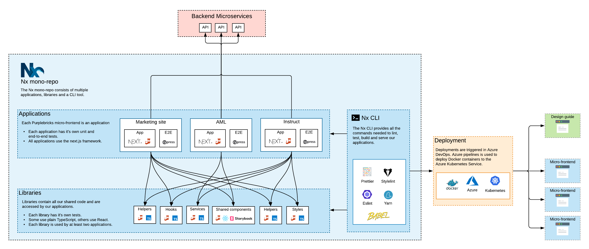

Clever code scaling with
Nx and Storybook
About me
Senior front-end engineer at Purplebricks
We have a problem
The main issues
- Code duplication
- Different versions of things used by other things
- Code in multiple repositories
- Different technologies
What are we doing about it?
What is Nx?
Nx is a set of extensible dev tools for mono-repos, which helps you develop like Google, Facebook, and Microsoft.
-
 Open-source
Open-source
-
Free
-
Ex-Angular developers and Google tech leads
What does Nx give us?
-
Mono-repo
-
Libraries and applications
-
CLI
-
No versioning
What does all this look like?
What is the workflow like?
What are the benefits?
- Cleaner codebase with reduced duplication
- UI consistency across our products
- Code consistency
- Tooling is faster
- Deployment pipeline is simpler
Thank you